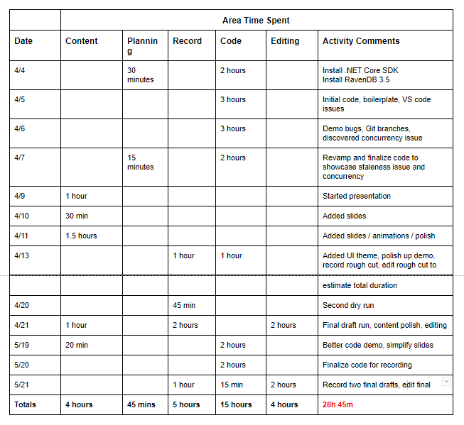
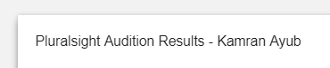

I'm a technologist, speaker, and Pluralsight author and I specialize in building full-stack solutions with a focus on modern web technology and cloud native architecture.

I have to admit it's tough for me to comprehend writing this post even though I passed the audition months ago. When I applied to become a Pluralsight author, I wasn't sure what to expect. Now, here I am receiving the green light on my first course (it's on RavenDB 4, more on that later). Yes, I successfully published my TypeScript course last January through Packt but I didn't necessarily consider myself "Pluralsight author" material. What does that even mean exactly?
Who is a Pluralsight author?
John Sonmez. John Papa. Scott Hanselman. Jon Skeet. K. Scott Allen. These are household names to me and my coworkers, especially in the Microsoft space. These are Pluralsight authors that are generally well-respected and well-known, they inspire me and [hundreds of?] thousands to be better developers in our careers. They have thousands of followers, speak at conferences around the world, and maintain celeb-to-quasi-celeb status within the community.
I can tell you it feels weird to be able to say I am lumped in the same category as those folks. Some of them literally wrote the book(s) on what I built my career on. Like I said, I can barely comprehend it.
The common thread
That's only 5 people though. If you go ahead and peruse the Pluralsight authors list, you realize there are a lot of authors. I recognize many but I also don't know most of them, I admit I probably won't ever follow and know them all (unless there's something that will automatically have me follow Pluralsight authors, then I'll use that).
I think the amazing thing is, everyone on that list became good at what they did by writing books, speaking around the world, or by knowing something enough to teach it effectively. The common thread is that they all are effective educators and inspire people. It could easily be someone else on that list that I've never heard of that ends up making someone else's Top 5 Pluralsight inspiring author. I bet you have a Top 5 yourself.
The audition
I think what surprised me most about the audition process was how straightforward it was. I had some preconceived notions about what it took to be an author (see above). It turns out, it really is about effective teaching because none of my prior work was a consideration during the process. I did not have to submit a resume. I didn't need to "prove" my cred. Nobody ever asked me what I did to get where I am.
It's all about the audition. That is the gauntlet you are measured by. It's a 8-10 minute video that you edit and design yourself on a topic that'd be close to what you'd teach. I decided to do mine on modeling uniqueness in RavenDB. I know exactly how long I spent because I tracked it: 28 hours and 45 minutes. See for yourself.

The "planning" column was more about dedicated planning time: laying out audition document plan, writing notes, etc. There was a lot of planning within the other columns that was just part of doing that thing.
I appreciated the fact the audition was low stress. There's a gap there from 4/21 to 5/19 due to conferences and travel. That was OK, it's at your own pace. Some folks will probably even decide to withdraw; recording, editing, and content development is not everyone's cup of tea.
You can clearly see I sent my audition at the end of May and I received a response June 7. Of course, they had to tease me in the subject:

Needless to say, I was nervous. I think I had my wife read it out loud to me.
"Thank you for taking the time and effort to submit an audition video to Pluralsight. Our Curriculum Team has completed review and your audition is..."
That's it, I failed, it wasn't good enough, I knew I should have spent more time explaining--
"APPROVED."
Oh shit. Oh shiiiit. Ohshitohshitohsit. WHAT. WHATTTTTTT.
I hugged my wife very hard and made sure to tell my 4mo that daddy was accepted as a freakin' Pluralsight author.
One thing I really appreciate is real feedback from reviewers. I want constructive feedback and want to continuously improve the quality of what I put out. I'll share what I received:
Kamran has a real knack for interleaving conceptual technical information with concrete behavior and experiences, all over a conversational narrative that is easy to follow. I really appreciate his arrangement of demos, code, and slides. Each phase of the demo is isolated with one specific goal, and each subsequent phase builds upon the knowledge gained in the last.
Demo code is small and pragmatic, discussion targets only the data access code and assumes a solid background in C# and async code which is appropriate.
A few areas where I see room for improvement:
- use of visuals is really good (eg the timeline at ~2:00 and the concurrency image at ~7:00), and I think Kamran should explore this skill more. Honestly his marriage of visuals and narrative is better than most new authors, and I really want to see how far he can stretch those muscles.
- the title slide is lingers a bit, I think there are opportunities for visuals there to help explain some of the motivation.
This is how to give good feedback. Lead with the good, finish with opportunities--something I can take away for next time and learn from.
I may share my audition (with approval) with "director commentary" on my YouTube channel, if that's something that would interest folks.
That's it! The next steps were to propose my course and chat with the curriculum director. I spent time researching and planning my proposal out, I even created a mockup demo with working code to send as an example.
Org-wide stuff kept my editor busy with work so it wasn't until pretty recently that the ball started rolling again. Finally this last Sunday my "statement of work" was signed. It was official!
Go ahead and audition
My advice to you or anyone reading this who also thinks they may have something to teach but still aren't sure whether you're "Pluralsight material" is to just submit an audition (and maybe give me a shoutout?). If you pass and can teach something new and inspiring to someone else, you are Pluralsight material.
Jury's out
My first course isn't published yet which means the jury's out on whether I deserve to be in that author list. I keep myself grounded by understanding that the course could still be rejected for whatever reason. I've come this far though and I'm going to try my damnedest to earn my place. This is an opportunity that I've literally only dreamed about and never thought would happen. Wish me luck!
Jury's in
May 2018: The course has been live for several months now with a great reception! I'm counting 12 5-star reviews so far which I'm super happy about (I could calculate the ratio of views/reviews but it's similar to any media--a very small percentage of people rate things). Here's to (hopefully) more courses in the future! 🍻
About Kamran